AWS Services Monitoring¶
Guidance about the important metrics to monitor and alarm on, listed by service.
For the metrics, the following symbols are used:
| Symbol | Meaning |
|---|---|
| Alarm any time the condition exists. | |
| These statistics should trigger alarms if the condition persists for several minutes. A couple increments occasionally should be expected as a normal part of networking. | |
| These statistics should always be monitored, and may be alarmed depending on specific use case. |
For quotas:
| Symbol | Meaning |
|---|---|
| Hard quota – Cannot be adjusted. | |
| Medium quota - Contact AWS to discuss these and possible alternative architectures. | |
| Soft quota - Adjustable by customer. |
Remember
Always validate the quotas below against the official AWS documentation - in case of differences, the official quotas should be used. Not all quotas are repeated here - only the most critical ones to keep an eye on.
Application Load Balancer¶
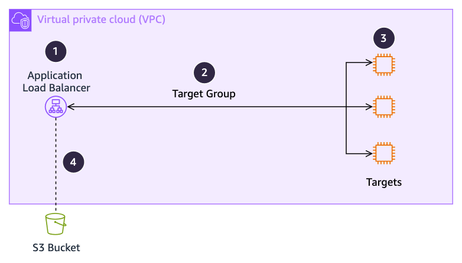
| Number | Notes | ||
|---|---|---|---|
| 1 | AWS CloudWatch "AWS/ApplicationELB" namespace: | ||
| Metric | Alarm if | ||
RejectedConnectionCount |
Going up more than 2/min | ||
UnhealthyHostCount |
Higher than 0 for longer than expected for scaling. | ||
ELBAuthError, ELBAuthLatency |
Going usually high, if user authentication is in use. | ||
ConsumedLCUs |
None - monitor for cost | ||
ActiveConnectionCount, NewConnectionCount, ProcessedBytes, ProcessedPackets |
Outside of band. | ||
| 2 | AWS CloudWatch "AWS/ApplicationELB" namespace, per target group: | ||
| Metric | Alarm if | ||
UnhealthyRequestCount, UnhealthyStateDNS, UnhealthyStateRouting |
Higher than 0 for longer than expected for scaling. | ||
| 3 | AWS CloudWatch "AWS/ApplicationELB" namespace, per target group: | ||
| Metric | Alarm if | ||
TargetConnectionErrorCount |
Increasing | ||
TargetResponseTime |
Going unusually high | ||
| 4 | Consider enabling access and/or connection logs. | ||
Always check these against the official Application Load Balancer quotas.
No key operational quotas.
AWS Direct Connect¶
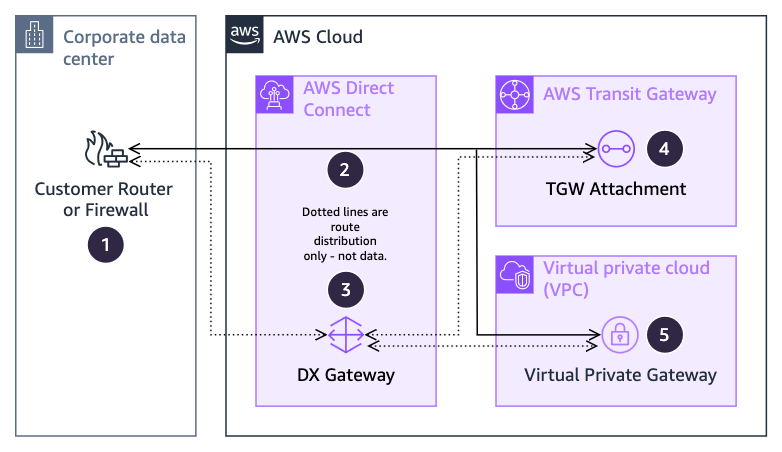
| Number | Notes | ||||||||||||||
|---|---|---|---|---|---|---|---|---|---|---|---|---|---|---|---|
| 1 | Monitor your router’s incoming and outgoing BPS and PPS, along with number of routes advertised and received against quotas. | ||||||||||||||
| 2 | AWS CloudWatch "AWS/DX" namespace, per connection: | ||||||||||||||
| Metric | Alarm if | ||||||||||||||
ConnectionState |
Equals 0 | ||||||||||||||
ConnectionEncryptionState |
Equals 0 if MACsec is enabled | ||||||||||||||
ConnectionErrorCount |
Going up more than 1/min | ||||||||||||||
ConnectionLightLevel(Rx|Tx) |
Outside the range of:
|
||||||||||||||
ConnectionBps(Ingress|Egress) |
80% of your link speed | ||||||||||||||
| 3 | DX Gateway is not in the traffic path, and does not have metrics to monitor. | ||||||||||||||
| 4 | See AWS Transit Gateway. | ||||||||||||||
| 5 | Virtual Private Gateways do not have metrics to monitor | ||||||||||||||
Always check these against the official AWS Direct Connect quotas.
| Component | Quota | Type |
|---|---|---|
| Routes from customer to AWS, per BGP session, per AFI (private/transit) | 100 | |
| Routes from customer to AWS, per BGP session, per AFI (public) | 1000 | |
| Routes from Transit Gateway to customer, combined AFIs | 200 |
AWS Site-to-Site VPN¶
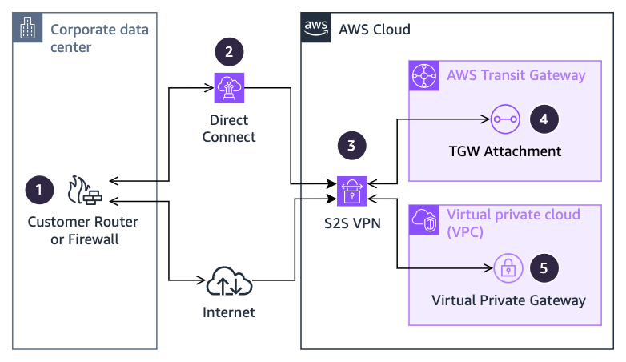
| Number | Notes | ||
|---|---|---|---|
| 1 | Monitor your router’s incoming and outgoing BPS and PPS, and alarm on tunnel down or errors. | ||
| 2 | See Direct Connect | ||
| 3 | AWS CloudWatch "AWS/VPN" namespace, per tunnel: | ||
| Metric | Alarm if | ||
TunnelState |
Equals 0 (down) | ||
TunnelDataIn, TunnelDataOut |
Exceeding 1.0 Gbps | ||
| 4 | See AWS Transit Gateway | ||
| 5 | Virtual Private Gateways do not have metrics to monitor. | ||
Always check these against the official AWS Site-to-Site VPN quotas.
| Component | Quota | Type |
|---|---|---|
| Bandwidth per tunnel | 1.25 Gbps | |
| Packets per second | 140,000 |
AWS Transit Gateway¶
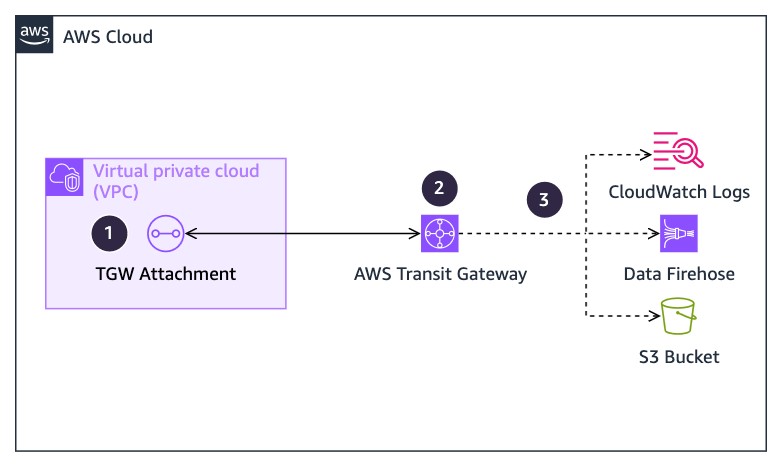
| Number | Notes | ||
|---|---|---|---|
| 1 | AWS CloudWatch "AWS/TransitGateway" namespace, per attachment: | ||
| Metric | Alarm if | ||
(Packet|Bytes)DropCount(Blackhole|NoRoute) |
Greater than 1% of traffic | ||
BytesIn + BytesOut |
Approaching 100 Gbps | ||
PacketsIn + PacketsOut |
Approaching 7.5 Mpps | ||
| 2 | AWS CloudWatch "AWS/TransitGateway" namespace, per Transit Gateway: | ||
| Metric | Alarm if | ||
(Packet|Bytes)DropCount(Blackhole|NoRoute) |
Greater than 1% of traffic | ||
BytesIn + BytesOut |
None (alarm on the attachment) | ||
PacketsIn + PacketsOut |
None (alarm on the attachment) | ||
| 3 | Consider enabling Transit Gateway Flow Logs | ||
Always check these against the official AWS Transit Gateway quotas.
| Component | Quota | Type |
|---|---|---|
| VPC, Direct Connect, and Peering Attachments, per AZ | 100 Gbps, 7.5 Mpps |
Network Load Balancer¶
| Number | Notes | ||
|---|---|---|---|
| 1 | AWS CloudWatch "AWS/NetworkELB" namespace, per NLB: | ||
| Metric | Alarm if | ||
RejectedFlowCount |
Greater than 0 | ||
PortAllocationErrorCount |
Greater than 0 | ||
UnHealthyHostCount |
Higher than 0 for longer than expected for scaling. | ||
UnhealthyRoutingFlowCount |
Greater than 0 | ||
TCP_(Client|ELB|Target)_Reset_Count |
Outside of band, or a large percentage of NewFlowCount | ||
ActiveFlowCount, NewFlowCount, PeakPacketsPerSecond, ProcessedByte, ProcessedPacket |
Outside of band | ||
| 2 | AWS CloudWatch "AWS/NetworkELB" namespace, per target group: | ||
| Metric | Alarm if | ||
PortAllocationErrorCount |
Greater than 0 | ||
UnhealthyRoutingRequestCount, UnhealthyStateDNS, UnhealthyStateRouting |
Greater than 0 | ||
| 3 | Appropriate per-target monitoring. | ||
| 4 | Consider enabling access logs if you are using TLS listeners. | ||
Always check these against the official Network Load Balancer quotas.
No key operational quotas.
Gateway Load Balancer¶
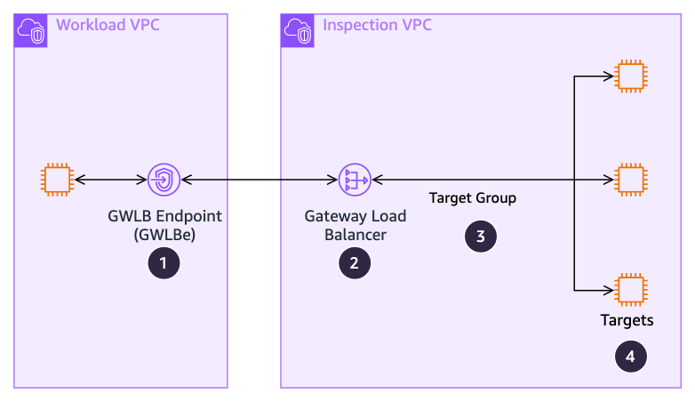
| Number | Notes | ||
|---|---|---|---|
| 1 | AWS CloudWatch "AWS/PrivateLinkEndpoints" namespace: | ||
| Metric | Alarm if | ||
PacketsDropped |
Greater than 0.5% | ||
RstPacketsReceived |
Greater than 10 pps | ||
ActiveConnections |
Going anomalously high | ||
BytesProcessed |
Approaching 100 Gbps | ||
NewConnections |
Going anomalously high | ||
| 2 | AWS CloudWatch "AWS/GatewayELB" namespace: | ||
| Metric | Alarm if | ||
RejectedFlowCount |
Greater than 0 | ||
UnhealthyHostCount |
Staying over 0 | ||
ConsumedLCUs |
Unexpected increases | ||
ActiveFlowCount |
Going anomalously high | ||
NewFlowCount |
Going anomalously high | ||
ProcessedBytes |
Approaching 100 Gbps | ||
| 3 | AWS CloudWatch "AWS/GatewayELB" namespace, per target group: | ||
| Metric | Alarm if | ||
UnhealthyHostCount |
Staying over 0 | ||
| 4 | Per target monitoring. | ||
Always check these against the official Gateway Load Balancer quotas.
| Component | Quota | Type |
|---|---|---|
| Network traffic (per GWLB) | 100 Gbps | |
| Network traffic (per GWLBe) | 100 Gbps |
Route53 Endpoints, Resolver, and Resolver DNS Firewall¶
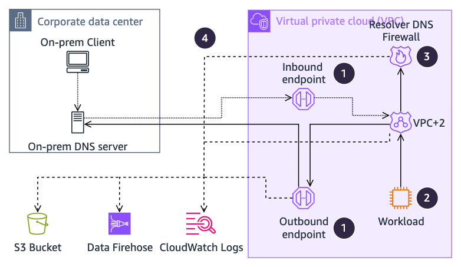
| Number | Notes | ||
|---|---|---|---|
| 1 | AWS CloudWatch "AWS/Route53Resolver" namespace: | ||
| Metric | Alarm if | ||
InboundQueryVolume or OutboundQueryAggregateVolume |
Greater than 8,000 per second | ||
EndpointUnHealthyENICount |
Greater than 0 for more than 10 minute | ||
| 2 | AWS CloudWatch "Instances" namespace, per instance: | ||
| Metric | Alarm if | ||
linklocal_allowance_exceeded |
Greater than 20 per minute | ||
| 3 | Consider utilizing the Resolver DNS firewall | ||
| 4 | Consider enabling query logging from the VPC+2 resolver, endpoints, and the DNS Firewall | ||
Always check these against the official Route53 Endpoints, Resolver, and Resolver DNS Firewall quotas.
| Component | Quota | Type |
|---|---|---|
| Packets per second from an instance to link-local/VPC+2, per interface | 1,024 pps | |
| Queries per second per IP address in an endpoint | 10,000 qps |
NAT Gateway¶
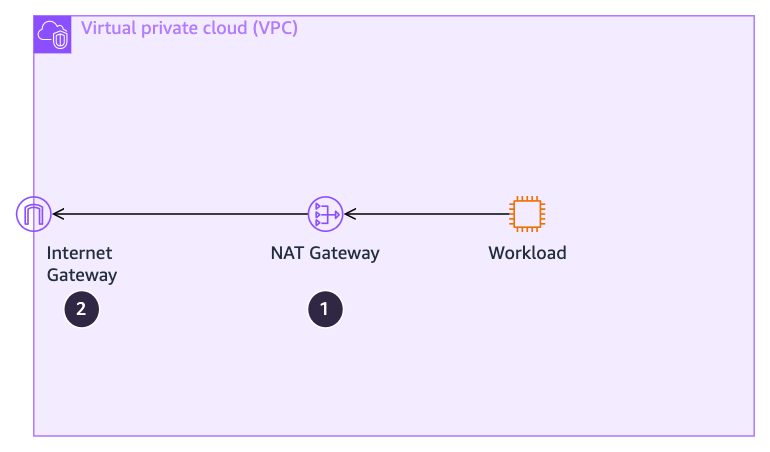
| Number | Notes | ||
|---|---|---|---|
| 1 | AWS CloudWatch "AWS/NATGateway" namespace: | ||
| Metric | Alarm if | ||
PacketsDropCount |
More than 0.1% per second | ||
ErrorPortAllocation |
More than 2 per second | ||
BytesInFromSource + BytesInFromDestination |
Approaching 100 Gbps | ||
PacketsInFromSource + PacketsInFromDestination |
Approaching 10 Mpps | ||
| 2 | See Internet Gateway section. | ||
Always check these against the official NAT Gateway quotas.
| Component | Quota | Type |
|---|---|---|
| Bits per seconds | 5 Gbps cold, able to scale up to 100 Gbps | |
| Packets per second | 1 Mpps cold, able to scale up to 10 Mpps | |
| Simultaneous connections from a source IP to each unique destination (can be mitigated by adding additional public IPs to the NAT gateway) | 55,000 | |
| Number of public IPs per NAT gateway | 8 (2 by default) |
Internet Gateway¶
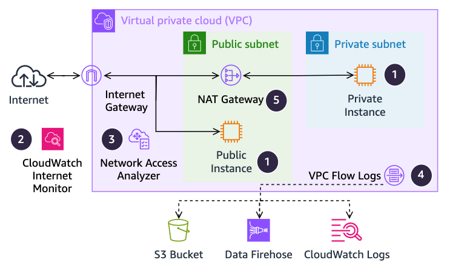
| Number | Notes | ||
|---|---|---|---|
| 1 | Monitor instances for network traffic exceeded. | ||
| 2 | Consider enabling CloudWatch Internet Monitor | ||
| 3 | Consider using Network Access Analyzer | ||
| 4 | Consider enabling VPC Flow Logs | ||
| 5 | See NAT Gateway section. | ||
Always check these against the official Internet Gateway quotas.
| Component | Quota | Type |
|---|---|---|
| Traffic to the internet, per instance | 5 Gbps or 50% of network bandwidth for instances with more than 32 vCPUs |
AWS PrivateLink¶
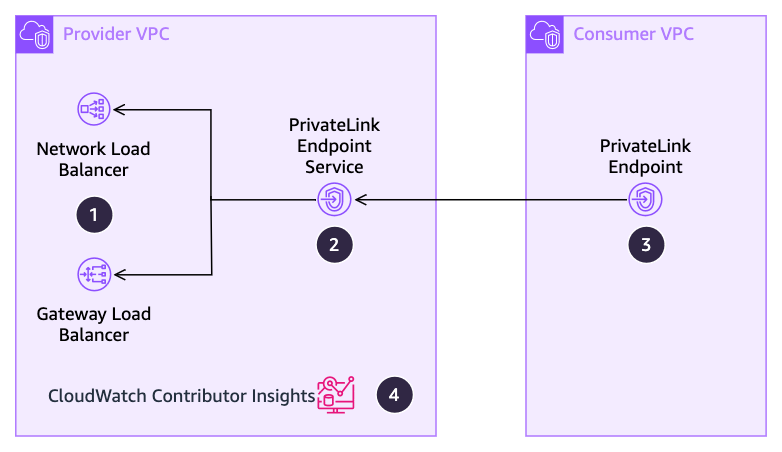
| Number | Notes | ||
|---|---|---|---|
| 1 | Monitor the attached load balancer (see their entries) | ||
| 2 | AWS CloudWatch "AWS/PrivateLinkServices" namespace, per service: | ||
| Metric | Alarm if | ||
RstPacketsSent |
Increasing quickly | ||
BytesProcessed |
Approaching 100 Gbps | ||
ActiveConnections |
Unexpectedly increasing | ||
NewConnections |
Unexpectedly increasing | ||
| 3 | AWS CloudWatch "AWS/PrivateLinkEndpoints" namespace, per endpoint: | ||
| Metric | Alarm if | ||
PacketsDropped |
Increasing quickly | ||
RstPacketsReceived |
Increasing quickly | ||
BytesProcessed |
Approaching 100 Gbps | ||
ActiveConnections |
Unexpectedly increasing | ||
NewConnections |
Unexpectedly increasing | ||
| 4 | Consider enabling Contributor Insights to see which endpoints are the largest contributors to traffic. | ||
Always check these against the official AWS PrivateLink quotas.
| Component | Quota | Type |
|---|---|---|
| Bits per second | 10 Gbps cold, able to scale to 100 Gbps |
Instances¶
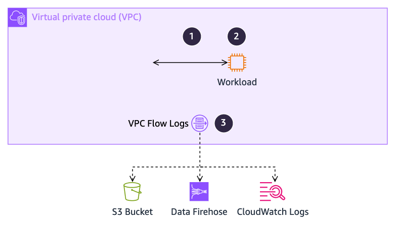
| Number | Notes | ||
|---|---|---|---|
| 1 | Metrics exported via CloudWatch agent, per network interface: | ||
| Metric | Alarm if | ||
conntrack_allowance_exceeded |
Increasing quickly | ||
conntrack_allowance_available |
Approaching zero | ||
bw_(in|out)_allowance_exceeded |
Increasing quickly | ||
Per interface RX dropped count |
Increasing quickly | ||
queue_<X>_tx_queue_stop |
Increasing quickly | ||
pps_allowance_exceeded |
Increasing quickly | ||
linklocal_allowance_exceeded |
Increasing quickly | ||
Output from “tc –s qdisc show <interface>” |
Shows drops increasing quickly | ||
| 2 | AWS CloudWatch “AWS/EC2” namespace contains many metrics to monitor, the exact ones depend on the details of the workload – CPUUtilization is a common one. See the EC2 metrics page for more. | ||
| 3 | Consider enabling VPC Flow Logs. | ||
Always check these against the official Instances quotas.
| Component | Quota | Type |
|---|---|---|
| Bits per second | Varies by instance type | |
| Packets per second from an instance to link-local/VPC+2, per interface | 1,024 pps |
AWS Network Firewall¶
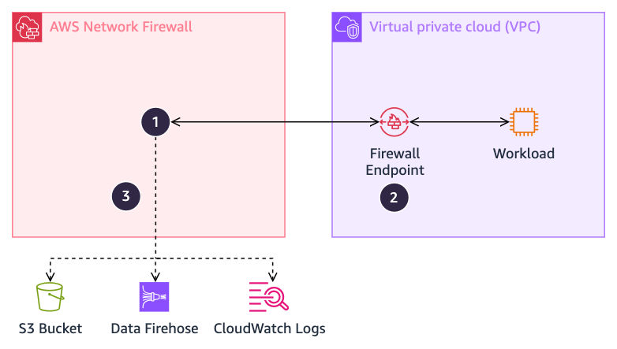
| Number | Notes | ||
|---|---|---|---|
| 1 | AWS CloudWatch "AWS/NetworkFirewall" namespace: | ||
| Metric | Alarm if | ||
InvalidDroppedPackets, OtherDroppedPackets |
Greater than 20/min | ||
DroppedPackets, RejectedPackets, ReceivedPackets |
Unexpected changes | ||
| 2 | A Firewall Endpoint is a GWLB endpoint – see GWLB for monitoring details. | ||
| 3 | Consider exporting flow, alert, and/or TLS logs from AWS Network Firewall’s stateful rules engine. | ||
Always check these against the official AWS Network Firewall quotas.
| Component | Quota | Type |
|---|---|---|
| Bits per second, per endpoint | 100 Gbps |